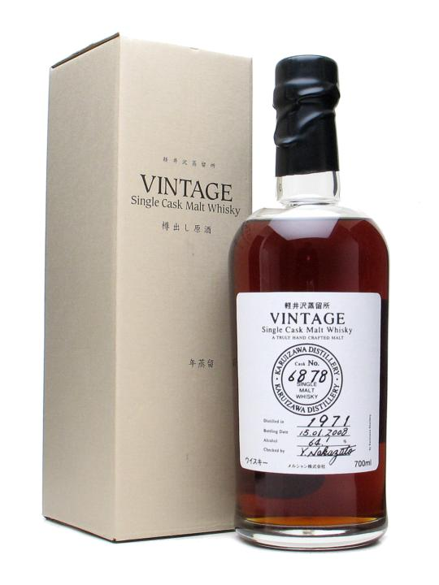

Page 1 of 1
Japanese whisky

Posted:
Wed May 06, 2009 8:57 pmby jcskinner
Anyone drank a lot of Japanese?
I've had some Suntory in the past, and a Yamazaki 12 and 18 yo, both of which were very tasty.
But probably my best experience of their spirit was in Glasgow last year when I sampled the Hakushu heavily peated malt.
This was very possibly the whisky that finally turned me on to smokey spirits. Mind you, I had the Laphroaig quarter cask back to back with it, and the two of them were excellent, but I still recall that Hakushu being amazing.
Like some others I suspect, I'll be along to the CWS Japanese tasting tomorrow.
But in advance of that, I'd be keen to hear people's experiences of Japanese whiskies, being very much a novice to their drams.
Re: Japanese whisky
Posted:
Tue Jun 02, 2009 3:36 pmby John
Hi jc
I've tried some of the Suntory releases but I would like to get my hands on a bottle of the Karuizawa 1971 just to see what all of the fuss is about!
Cheers,
John.
Re: Japanese whisky
Posted:
Tue Jun 02, 2009 3:54 pmby JohnM
There's a 1972 version out now that some people say is better, although others disagree.
The 1971 was very good.
Re: Japanese whisky
Posted:
Tue Jun 02, 2009 4:22 pmby DavidH
So what do y'all think after the CWS Japanese whisky tasting?
They were all decent, with the Yamazaki 18yo my favourite of the lot. But still, I didn't rate any of them as a whisky I would buy.
That's the second time I've done a sweep through a bunch of Japanese whiskies, with the same result.
Re: Japanese whisky
Posted:
Tue Jun 02, 2009 7:54 pmby jcskinner
I don't have my notes from that tasting handy, but I do recall thinking that I preferred the Yamazakis that I've tried in the past more than anything that was on offer.
They all seemed like mid-quality scotches to me.
I wanted to get a Karuizawa 71 as it is my birth year, but it got hyped and prices ran away from me quickly before I had time to save up for it.
I'm sure it's nice, but like some Irish bottlings recently, it seems to be a product of overpricing and hype.
Then again perhaps I'm just bitter at missing out on something spectacular.
Re: Japanese whisky
Posted:
Wed Jun 03, 2009 1:33 amby IrishWhiskeyChaser
Sorry to dissappoint you guys but I got my grubby mits on a bottle and I loved it

I paid £110 for a 36yo vintage whiskey which I thought was a cracking price. Beats the prices for Bowmore

I do have to say it was an amazing zbottle and I've really enjoyed it and what was more amazing for a 36yo whiskey it was 64.1%

A brute but brilliant.
Re: Japanese whisky
Posted:
Wed Jun 03, 2009 8:51 amby JohnM
I bought a couple of the 1970s ones, but didn't get the 1971 at the time, unfortunately. Adrian kindly gave me a sample of that one.
Pictures are a 1972 and a 1977.
Re: Japanese whisky
Posted:
Wed Jun 03, 2009 9:38 amby John
Shame on me for not moving on this earlier - he who hesitates is lost. Ah well; on to the next find.....
Thanks for the pics John; one question though - from the pic, both bottles are new, intact, etc, etc, - and both appear to be filled below the neck line! - do you know if this standard practice with Japanese whiskeys?
Cheers,
John.
Re: Japanese whisky
Posted:
Wed Jun 03, 2009 9:42 amby JohnM
I'm not sure. It might just be that the bottle is slightly more than 70cl, so it's not filled as much. Just my guess, though.
All the pictures on the net have the same fill level -
http://www.whiskynotes.be/upload/Karuiz ... _thumb.jpg
Re: Japanese whisky
Posted:
Wed Jun 03, 2009 10:36 amby IrishWhiskeyChaser
Mine was the same ...
- 
- Karuizawa 1971
- Karuizawa1971.jpg (33.52 KiB) Viewed 1251 times
Re: Japanese whisky
Posted:
Wed Jun 03, 2009 1:24 pmby DavidH
Is it possible they use the same line for bottling 700ml and 750ml? Then one would be a little under-full and the other a little over-full. Or maybe they ran out of the 700ml bottles. Just speculating...
Re: Japanese whisky
Posted:
Wed Jun 03, 2009 1:32 pmby JohnM
More wild speculation, but how much would a liquid expand in a bottle at very high temperatures? It must have been matured at high temperatures, if the abv was that high when bottling. Ah, I'm probably talking rubbish.
I suppose I could work it out.
Re: Japanese whisky
Posted:
Wed Jun 03, 2009 4:34 pmby IrishWhiskeyChaser
JohnM wrote:More wild speculation, but how much would a liquid expand in a bottle at very high temperatures? It must have been matured at high temperatures, if the abv was that high when bottling. Ah, I'm probably talking rubbish.
I suppose I could work it out.
Very possible JM ... Japan has very hot summers in parts so definitelywould be a reason for the high ABV of such an old whiskey.
The extra space idea could also be a logical conclusion but hate to think that they are storing their botles in hot conditions.
DH's explaination would be another logical answer. DO they bottle at 70 or 75cl in Japan ???
Or may be it's just their style
Look at this bottle of Ginko
It has a rim at the neck with the whiskey line at the rim

{kind=link}